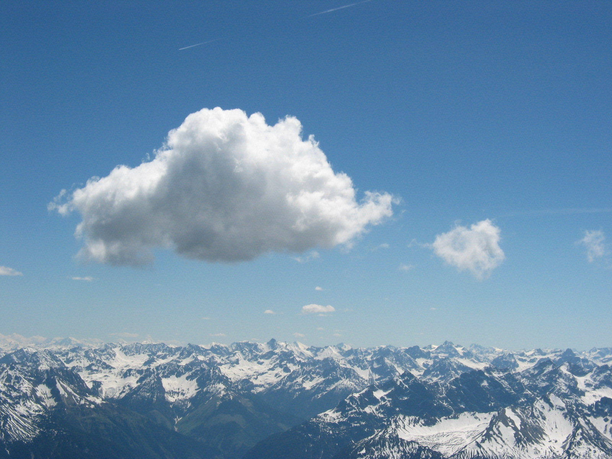
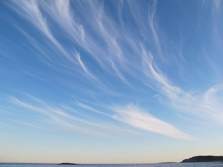
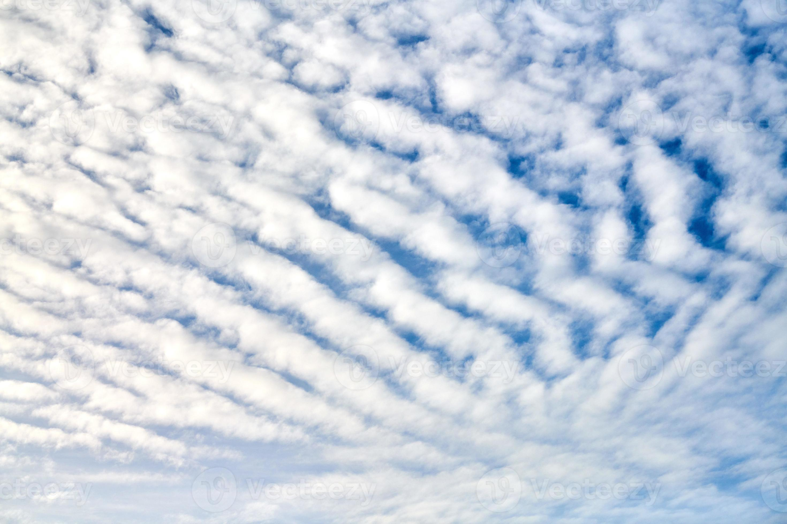

Cumulus (Cúmulos)
Possuem aparência de algodão, com bases geralmente planas e partes superiores arredondadas. Costumam aparecer em dias de tempo estável.
Altitude: baixaEXPLORE O CÉU
As nuvens estão presentes no nosso cotidiano, mas você sabe como elas se formam e o que cada uma delas pode revelar sobre o tempo? Venha descobrir o fascinante universo das nuvens!
Explorar as nuvensCONHECENDO A ATMOSFERA
As nuvens são classificadas de acordo com sua aparência, altitude e características. Conheça alguns dos principais tipos:

Possuem aparência de algodão, com bases geralmente planas e partes superiores arredondadas. Costumam aparecer em dias de tempo estável.
Altitude: baixaFormam camadas uniformes e acinzentadas, cobrindo grande parte do céu. Podem provocar garoa.
Altitude: baixa
São nuvens finas e delicadas, semelhantes a fios ou penas. São formadas principalmente por cristais de gelo.
Altitude: altaSão nuvens de grande desenvolvimento vertical, associadas a tempestades, raios e chuvas intensas.
Altitude: vários níveis
Apresentam pequenos grupos de nuvens arredondadas, geralmente distribuídos em altitudes médias.
Altitude: médiaSão nuvens espessas e extensas que costumam provocar chuvas contínuas e abrangentes.
Altitude: baixa e médiaVOCÊ SABIA?
TESTE SEUS CONHECIMENTOS
Descubra o quanto você aprendeu sobre o universo das nuvens. Responda às perguntas e confira seu resultado!
Pergunta 1 de 5